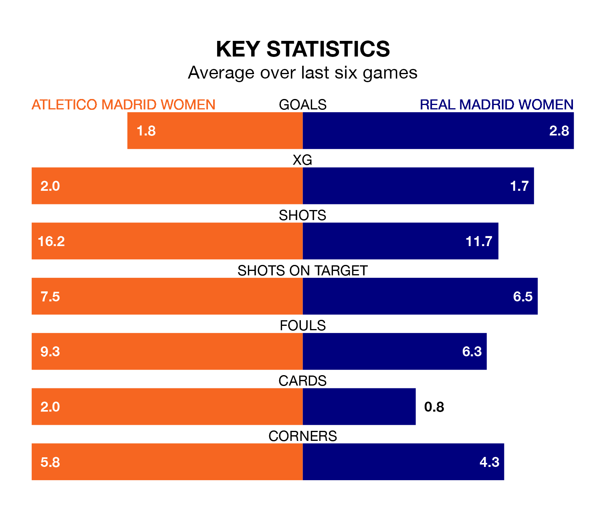

Two of Liga F's meanest defences go head-to-head at Centro Deportivo Alcalá de Henares on Wednesday, when Atletico Madrid Women host Real Madrid Women.
Only two sides – Barcelona Women and Levante Women – have conceded fewer goals than Atletico Madrid to date: the home side have let in just 12 goals in 16 games.
Madrid Women have conceded 20 goals in 16 games, giving them the fourth tightest back line so far this season.
Key to Atletico Madrid's home form has been María Dolores Gallardo Nuñez, who has allowed 0.8 goals past him per 90 minutes, compared to 0.79 for María Isabel Rodríguez Rivero in the opposite net.
Madrid Women are second in the table after 16 games, of which they have won 13 and lost three, earning 39 points.
Atletico Madrid are three places behind the visitors in fifth, with nine wins and four draws putting them on 31 points.
In Sheila Guijarro Gómez, the home side have one of the league's most on-form strikers so far this season. She has notched 11 goals in 16 appearances, to sit second in the scoring charts.
Her goal rate of one every 119 minutes is slightly quicker than that of Caroline Møller Hansen, Madrid Women's top scorer with a goal every 69 minutes, and a total of eight goals in 10 games.
In the last 10 years, Atletico Madrid and Madrid Women have played each other on six occasions. Atletico Madrid won two of them, Madrid Women three, and they drew once.
On average, Atletico Madrid scored 0.5 goals and Madrid Women 0.7 in those matches.
Their last meeting was on March 12, when they played out a 0-0 draw.
Atletico Madrid are in mixed form in Liga F, with two wins and three draws from their last six games.
With five wins and one loss over that period, Madrid Women's form is much better – they have taken 15 points from 18, compared to Atletico Madrid's nine.
Atletico Madrid's last match was on Sunday, a 1-1 draw against Madrid CFF, with Eva Maria Navarro getting the goal for Atletico Madrid.
Madrid Women beat Real Betis Women 4-1 last time out, also on Sunday, with Athenea del Castillo Belvide (two), Møller Hansen and Signe Kallesøe Bruun on the scoresheet.
Updated: 09:02 (UTC), 13/02/24